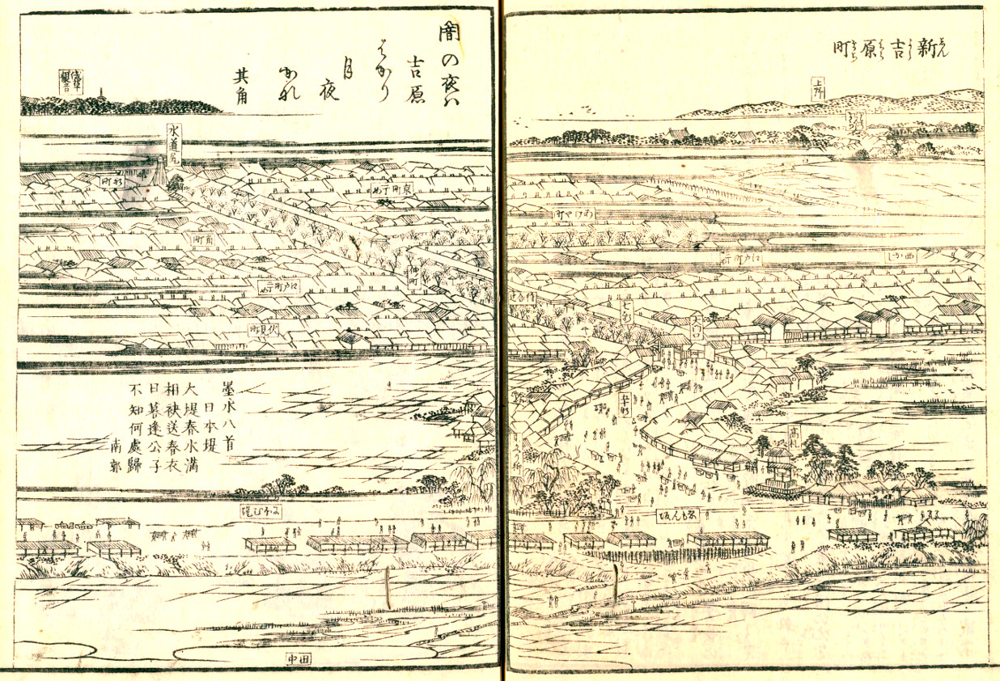
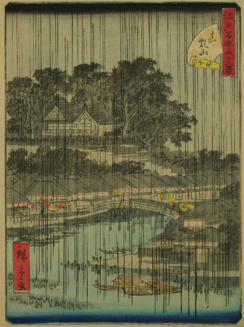
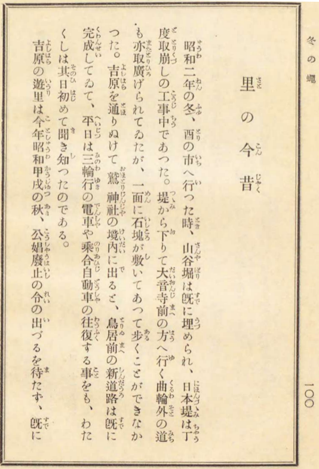

673: '公界野ざらし'事件¶
依頼者¶
同じデザイン専門学校を出た男女五人。
依頼内容¶
五人のそれぞれの分野は違っていて、既に独り立ちしている者、まだ徒弟修行中の者とまちまちである。それほど深く議論をしたわけでもないが、互いの仕事を見てきて、何となく方向が同じと感じているので、共同で集団を作ってみようかということになった。まずは拠点になる事務所を借りたい。いろいろと見てまわてきたが、いよいよとなると場所を決めることができない。こんな場合、どうやって決めているのか、調べて欲しい。
調査報告¶
叙事詩的情調¶
{kind=link}
図1 新吉原(江戸名所図会7巻(天保5-7年、1834-1836)。 国立国会図書館デジタルコレクション )。手前を左右に横切って日本堤。日本堤から新吉原に導く、折れ曲がった五十間道、その入口そばに見返り柳、衣紋坂の文字がある。右奥に上野の台地、左奥に浅草観音。
永井荷風は一葉「たけくらべ」、柳浪「今戸心中」、鏡花「註文帳」を吉原という土地の叙事詩的一面を捉えた名作とした [1] 。滅び行く吉原にあった、江戸浄瑠璃に見るような叙事詩的情調を記したものとして、これら三作をあげたのである。
浄瑠璃を叙事詩的というのは、市井に知られた事件を下敷きに音曲にのせて語るという点で、イーリアスなどの叙事詩に結実した古代口承の世界と共通点を持つからである。そして、「叙事詩的情調」は、音曲に語られる華々しさがそのまま儚さであるような世界の雰囲気である。
華々しさを支えていたのは、その日暮しの貧民たちで、その生活が吉原の周辺のそこかしこにあり、いったいの風景を作っていた。荷風はその情緒が一葉、柳浪、鏡花の作品にかろうじて残されたのを貴重なこととした。
吉原周辺ほどの洗練はなくても、その日暮しの庶民が寄りあって暮らすことの哀調は、日本の都市のそこかしこに存在していた。しかし、「叙事詩的」情調とまでなるには、そこを背景として、人の口に語られるような悲劇が起きなければならない。
そのような悲劇が多く生まれる土地には、そこに備わった特別な条件があるように思える。遊郭が栄えたからそんな条件ができあがったとも言えるし、特別な条件を備えた場所だったから遊郭が栄えたのだとも言える。
点を打つ¶
鳥類学者ウィリアム・ハドソンは1841年ブエノス・アイレスに生まれた。1870年、南半球の夏、鳥類標本収集のためにパタゴニアに入った [2] 。しかし、ほとんど準備も始まらないさきに、たまたま手にした古い拳銃が暴発して、自分の膝に弾丸を受けた [3] 。そのため、標本収集はほどほどに、リオ・ネグロの大峡谷で長い休暇のような日々を過ごすことになった。その間、ずいぶん遠くまで馬を駆っては、地勢、動植物の生態、住民の生活を記録した。
彼はパタゴニアからいったんは故郷のブエノス・アイレスに戻ったが、1874年に英国に渡り、二度とアルゼンチンには還らなかった。渡英は鳥類学者としてのキャリアを積むためだった。が、彼の自然観からくる独特の論文スタイルは学会の受け入れるところとはならず、しかたなく売文によって貧しい生計を立てるようになった。アルゼンチン生まれの孤独な青年は、自分の経験を英国社会に伝えるための枠組みを見出すのに、長い時間を必要とした。鳥類学者また文学者としての成功は1880年代の終わり頃、そろそろ五十歳になろうという頃になってようやく訪れた。
「パタゴニアの怠惰な日々」は1893年に出版された。彼がパタゴニアで過ごした日々から二十数年が過ぎていた。みずみずしい散文詩であると同時に、さまざまな事物、生物、人間の姿を風景の中にたくみに描きだしていて、パタゴニアの地を駆け巡った若いハドソンと、読者と自分との距離を測ることができるようになった初老の作家ハドソンとの合作とでもいうべきものである。
丘に到着すると、ゆっくりと頂上まで馬を走らせ、そこに立って景色を眺めた。四方八方に、
荒々しく不規則な大きな起伏が広がっていた。すべてが灰色だった。近いところから、
丘陵の線が遠くもうろうとしている霞におおわれた地平線まで。ひととおり見渡し終えると、
またあてのない放浪を始め、別の高台に登っては同じ風景を別の場所から眺めたりといったことを、
幾時間でも続けた。正午になると馬を降りて、畳んだポンチョの上に座ったり寝転んだりして、
数時間を過ごした。そんなある日、私は、鹿などの野生動物の群れがいたことを思わせる、
二～三十本の樹木が適度な間隔で生えている小さな茂みを発見した。この茂みは近隣の丘とは
異なる形の丘の上にあったので、やがて、私は毎日正午になるとこの茂みを見つけて休憩する
ようになった。他の丘の中腹にいくらでもある木や茂みではなくて、わざわざその場所を
選んで座る理由を、私は自分に問わなかった。私は何も考えず、無意識のうちに行動していた。
しかし、あとになって分かったことだが、一度その場所で休んでからは、休息を欲するたびに
必ず、幹が磨かれ、下に清潔な砂が敷かれた、あの特別な木々の一群を思い起こすのだった。
その同じ場所に、動物的な習慣性をもって、幾度でも帰るようになっていた。
ウィリアム・ハドソン、「パタゴニアの怠惰な日々」、1893年1月.
人を惹きつける不思議な条件を備えた場所は、パタゴニアの灰色の荒地のなか、ウィリアム・ハドソンがはっきりした理由も分からないまま、動物的な習慣性をもってたびたび通うようになった茂みのように、自然が作り上げたままのこともあるし、人工の掘割や土地の高低から構成されることもある。
今や陸上の一孤島の如き形をなせる待乳山は嘗ては湯島臺・上野臺と相連りて平坦なる
丘陵を為せし時代ありき。而も久しきに亘れる水蝕・風化の作用は、能く此の臺地を
消磨し去りて、其の一隅に一丘を止めしなり。斯くて緩慢なる土地の陥没と隆起とは
こゝに繰り返され、一旦碧波の浸す所たりし一孤島は、再び平衍なる陸地中の孤丘として
西の方近く湯島・上野の臺に面し、東の方遠く鴻臺の高地に對し、其の間尚久しく海鳥
の領域に屬したりしものゝ如し。
浅草区誌 大正三年二月
これが山かと言いたくなる、高さ7m(二十四尺)ほどの
{kind=link}
図2 荷風の「里の今昔」には、明治３０年春、初めて吉原の遊里を見に行ったときの周辺の景色が描かれている。その頃の浅草・下谷地図(東京府管内分図:学校用、明治３１年刊、 国立国会図書館デジタルコレクション ) と、正保年中江戸絵図(1644-1645)の日本堤内側の水田、低湿地とを重ねて示す。位置は聖天宮(右赤点)と不忍池東端(左赤点)との二点を基準にして合わせた。こうしてみると２５０年離れた二つの地図の間で、待乳山外縁の環状路(茶色点線)や、待乳山周囲の微高地から低湿地に入り込む道の位置などが、思いのほか良く合っている。
日本堤は、この待乳山のある
日本堤は隅田川左岸側の墨田堤と合わせてＶ字ダムとなり、荒川氾濫時には堤より上流側に広域な遊水池を形成することで江戸を洪水から守ったと考えられてきた。しかし、最近の数値シミュレーションからは、少しちがった機能が見えてきた [Ishi17] :
シミュレーション結果によれば，従来考えられていた上流低地の遊水量は意外に小さく，
日本堤での塞き上げに伴う下流水面勾配増大による隅田川下流への流量増と，綾瀬川合流部を
経由した中川低地水田地帯への氾濫水誘導が日本堤の主たる機能であると考えられた。
また，このような“水の逃げ道を考慮した遊水機能”により．日本堤の越水破堤の危険性
は小さかったものと考えられる.
つまり、日本堤の存在によって生じる微妙な水位差によって氾濫水を誘導するというのが、築堤の構想にあったのではないか、というのである。すると、待乳山を削ったのには、築堤のための土砂採取に加えて、北東斜面を削って水の逃げ道を作るという目的があったように思える。
{kind=link}
図3 待乳山を隅田川上の東側から望む図。左端は待乳山上の木立のあいだに聖天宮、中央に山谷堀にかかる今戸橋、当時、画面で橋の右側は今戸町、左側の家並は新鳥越町一丁目。日本堤は右奥の画面外。 （ 歌川 広重 世. 江戸名所四十八景 一立斎廣重 画. 江戸, 紅英堂, 1861. )
正保二年(1645年)、浅草鳥越神社周囲を武家地とすることになり、鳥越を拠点としていた弾左衛門配下の穢多の集落が、日本堤の北東側の今戸-山谷辺に移された。車善七を頭とする非人の集団も鳥越におり、同じころに日本堤近くに移ったたものと推定される。
日本堤の上には初め漆の木が植えられていた。ということは、築堤時にはまだそれほど人の往来は期待していなかったように思える。堤上の人の往還は正保になって、穢多、非人の集団が移ってきた頃からではないか。漆の木は新吉原の地業ころまで残っていた。後に、新吉原完成までの間に遊女たちが山谷の農家を借りて仮営業していたとき、山谷通いで漆にかぶれ、などという戯言が残されている [Hanam] 。
新吉原遊郭の地業、建設は1657年である。明暦2年(1656)、日本橋附近の元吉原の遊女屋たちに移転の命が下った。そのかわり「浅草寺後日本堤或は本所辺の両所」のいずれかで土地を給すというのだった [4] 。遊女屋たちは、本所はまだ不便だったため、日本堤に近い地を希望した。
新吉原のあたりはもともと、周囲より自然地形が高い場所だった可能性が指摘されている [Koy21] 。周囲の低湿地の中から少し顔を出している土地が、日本堤のちょうど中間のあたりにあった。日本堤の建設作業自体がこの中間の地をうまく利用して行われた可能性もある。
どんな身分の誰かは知らないが日本堤のうえを良く通る者がいた。
西には上野から三ノ輪に続く高地、南に高く浅草寺を見て、あいだには茫として広がる
田圃や池沼、それらの中に少し顔を出した草地を眼下に見下ろす場所に来た。
そこから東に振りかえれば、田圃や粗末な家々、小さな寺院を散らばせた平坦な土地の
むこうに、隅田川の流れが見える。不思議と良くそのあたりで足を休めては、
そうして周囲を眺めた。
そこに立つと、いつも何かが待ち受けているように思える。新吉原のために地図に点を打つ必要ができたとき、遊女屋や奉行たちをその場所に案内したのは、そんな感覚を共有していた者にちがいない。
公界と野ざらし¶
明暦三年(1657)一月に起きたいわゆる明暦大火は江戸市街地の大半を焼きつくした。元吉原の遊女屋も居場所を失い、新吉原の完成を待たずに、山谷、今戸、新鳥越の百姓家を借りて仮営業を始めることになった。
新吉原の造成は尾州の黒鍬衆が担い、そこに車善七配下の非人多数が使われたと言われている [5] 。善七たちは大火の焼死体かたづけにも多数動員された。明暦三年四月に造成工事開始、八月には新吉原での営業が始まっている。大火復旧のために各地から江戸に土工、大工、資材が流れ込んできていたにしても、驚異的な速度と言うほかない。
記録にあるかぎりでは、非人頭善七以下は寛文七年(1667)には新吉原裏手に住みついている。初代車善七らはいったい何者なのかというのは、あらゆる証拠が燃えてしまったあとの江戸末期の断片的な情報をもとに判断してしまうと、大事な点を見落としてしまう。
( 「荻生徂徠と車善七伝説」 参照)。
この善七を筆頭として乞食集団をまとめていた者達、庄司甚右衛門らの
{kind=link}
図4 吉原の変遷。図の最下行は中村孝也「元禄及び享保時代に於ける経済思想の研究」の第九章結論に基づく。遊女階級の変遷、揚屋数変化、貨幣流通量データについては [Note] 参照。
元吉原から新吉原初期、廓はかつての「
江戸時代、「公界」という語はごくふつうには「
くがひとは傾城の出世して、退出する間迄をさして、くがひを勤むるといふなり
色道大観
つまり、遊女(
たしかに遊女は年季でしばられていたが、このころはまだ、年季とは遊女が自分を売るための資本と場所を借りたのと同じことである。上方とちがって、元禄までは吉原の遊女は化粧も薄く、衣服も比較的簡素だったと伝えられている。鳶魚によると、容姿の基準も上方ほどうるさくはなかったらしい [7] 。
一 むかしは遊女の衣服も今の如く錦天鵞絨のいかめしきものをのみ好めるにはあらず
さりとて衣裳の麁末なるにあらねども其時代にはひときは思ひいれありし事也と云々
一 江戸町二丁目みょうがや吉右衛門内 奥州といへる名とりありける
ひとヽせ 八朔の白小袖にすヽきを一めんにして 野ざらし（髑髏）のもよふを着て出たり
今の人いまはしきやうにおもひ給ふべけれども かくまで気性の甚しく活気のみちみちたる時代を
おもひ給へと老人の物がたり也
吉原雑話（年代、作者不明）
吉原雑話は、寛文(1661-1673)の頃に能筆と男を操る手練とで有名だった、
奥州は自らの手で「てれんいつはりなし」と書き入れた提灯を先に、揚屋への道中に出た。手練手管は遊びじゃないよと言って、呼ばれた座敷に向かったのである。
遊女の品は時代とともに変わった(図4)。新吉原初期には、遊女は太夫、格子、局、端女郎、見世女郎の五階級で、太夫、格子を抱える店が一等級の遊女屋だった。太夫に会うには、客は揚屋に行き、そこに太夫を招かなければならなかった。太夫の数は時とともに不規則に増減したが、太夫と格子女郎の総数はしばらくの間は75人前後で推移した。
{kind=link}
しかし、新吉原はやがて金で買われてきて色を売らされる者たちの隔離施設、「苦界」に変貌していく。遊女屋は一度は町民の列に加えられたものの、稼ぐほどますます賤民視されるようになった。幕府は市中で狩った私娼や、不義密通で捕まえた女たちをも次々と新吉原に放り込んだ。
宝暦になって太夫はいなくなり、最後の一軒の揚屋も消えた。揚屋での遊びはとうにすたれて、遊客は茶屋で芸者と遊んでから遊女屋で女を買った。それでも、吉原はまぼろしの「公界」をかすかに保って、徳川期文芸の一角を支えながら [8] 、幕府よりも長く生き延びた。
荷風に言わせれば、明治４２−３年にはすでに吉原遊里の光景と風俗は面影を失っていた。「里の今昔」は昭和二年の冬の光景から始まる。
とんでもなく長いあいだ日にさらされてきた頭蓋骨の白く磨きつくされた表面は、
午後の光を強く反射して、目が痛くなるほどだった。それらが密集している所では、
立ち止まって一つ一つ取り上げて調べては、またそっと置く、時にはそのひとつを
手に持って、黄色い砂を流して中の空洞を満たし、落ちてくる光り輝く流れを
見つめながら、なんの意味もない空虚な考えや推測にふけった。蒐集家でも
考古学者でもなく、いかなる科学的な探究のためでもなく、ただ物悲しい思いに
ふけるためだけのように、この谷で私はそれら髑髏のもとを幾度も訪れた。地面に
置かれ砕かれた頭蓋骨のひとつ、その空洞を覗きこむことで、魔法の鏡のように、
生きていたときの脳中にかつて存在した世界のイメージを見ることができたとして、
私は何を見ただろうか？
ウィリアム・ハドソン、「パタゴニアの怠惰な日々」
2021年10月6日
報告書欄外メモ¶
人数が多くてオフィスには入りきらないので、 ホステル に新しくできた屋上朝食場でハムエッグにトーストとコーヒーのセットを皆で頼んで閑談。好天。こんな陽気のむかし、I町あたりのデパートの屋上にはアドバルーンがあがり、軽飛行機から宣伝のビラがまかれたりした話をしてみたが、彼等はその光景をまったくイメージできないようだった。
| [1] | 永井荷風、「里の今昔」。 |
| [2] | ハドソンのパタゴニア行きがいつのことだったかは、はっきりしないが、1870年12月から約1年間と考えられている [Imhoff09] 。ハドソンは生前に自分の伝記的資料を意図的にこわしてしまい、詳細が分からない部分が少なくない [Miller85] 。 |
| [3] | この銃の暴発のエピソードは創作だったのかもしれない [Bell01] 。日記に基づくとはいえ、全体が創作と考えるべきだが、なかでも嵐で難船しかかる冒頭や、足を撃った傷から回復し、退院して動き回れるようになるまでの記述は、あまり実際の出来事らしくない。 |
| [4] | 明暦二年十月九日、江戸町奉行石谷将監より厳命あり(浅草區史下巻) |
| [5] | 新吉原の造成に尾州黒鍬組が働いたのには、遊女屋のなかの尾州出身者の導きを推定する説もある。洞房語圓は、元吉原では尾州出身者は少なく、後にいつのまにか尾州者が大半を占めるようになったとしている。 |
| [6] | 三田村鳶魚「苦界」、「江戸時代のさまざま」所収、博文館、昭和4年。 |
| [7] | 三田村鳶魚、「江戸雑話」、春陽堂、昭和2年。 |
| [8] | 坪内逍遥は、德川期文藝は、歌舞伎、浮世繪、小説に「狭斜」を加えた四角関係のうえに特殊な進化を遂げたものだと指摘した。「狭斜」は文政期頃までは吉原のことだったが、次第に深川、柳橋にその座を明け渡すことになった(「新舊過渡期の回想」)。 |
| [Imhoff09] | Joshua Imhoff, W. H. Hudson: Between Art and Science, Miami University, Oxford, Ohio 2009. |
| [Miller85] | David Lindsay Sean Miller, The Elusive Paradise: A Study of W.H. Hudson, thesis, Royal Holloway College, University ofLondon, 1985. |
| [Bell01] | Mark W. Bell, Going to nowhere : narratives of Patagonian exploration, University of Richmond Scholarship Repository, Master's Thesis. |
| [Ishi17] | 石川忠晴、赤穂良輔、小林裕貴、数値シミュレーションによる日本堤システムの洪水調節機能の評価、土木学会論文集B1(水工学) 73(2017)I_1387-I_1392. |
| [Koy21] | 小柳美樹、吉原遊廓地業についての基礎的研究、人文研究論集第6号(2021.3)17-27. |
| [Hanam] | 江戸花街沿革誌、関根金四郎 編、1894 . なお、新吉原の家作が整うまで、遊女たちは日本堤北東側の今戸、新鳥越、山谷の農家を借りて営業することを許された。 |
| [Note] | 揚屋数変遷は主に関根金四郎「江戸花街沿革史」（明治27）. 貨幣流通量データは、大塚英樹「江戸時代における改鋳の歴史とその評価」日本銀行金融研究所/金融研究/1999.9, pp.73-94.、及び、岩崎勝「徳川時代の銭貨残高」名古屋大学論集社会科学篇55巻2号, 2018, pp. 51-63. 太夫や格子女郎の値は金立てだった。 |